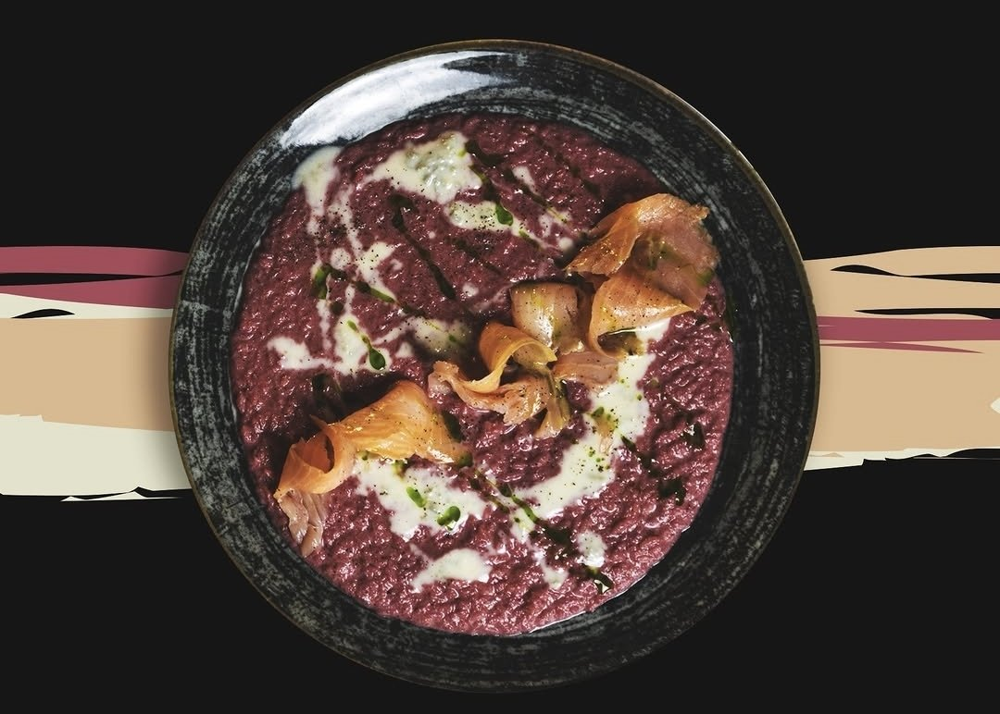
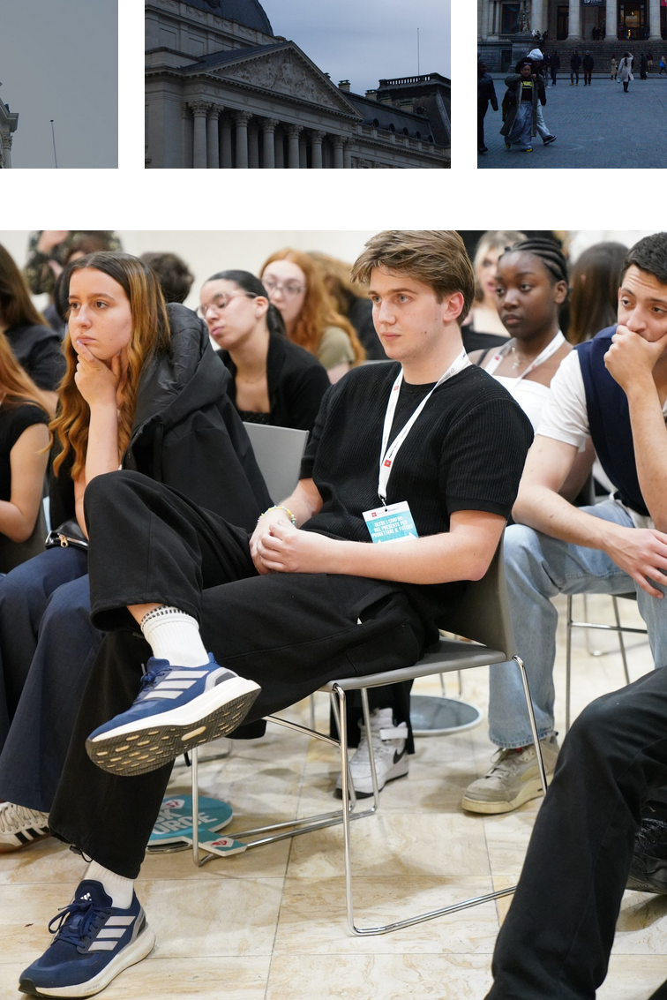
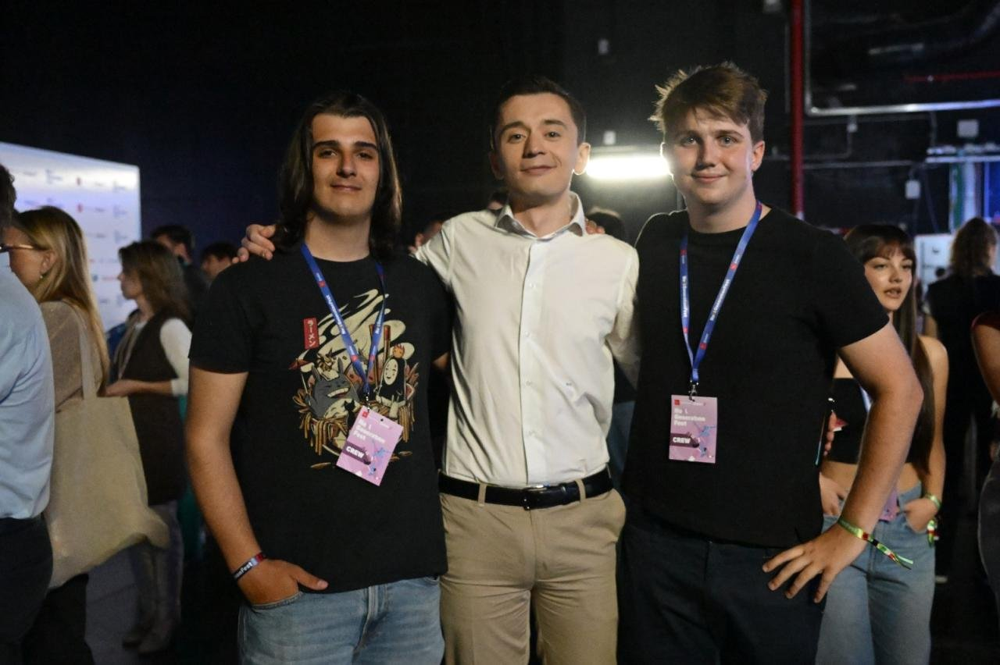

More than one thing at a time.
I'm Francesco. Born in Tuscany, half Czech, currently in Brussels reading Social Sciences at the VUB, with political science ahead in the final year. I sit on a student board, work on youth policy back in Italy, and build small tools whenever a problem annoys me enough. I trained in a professional kitchen before any of that, and it's still the part I'm least willing to give up.
Open source work.
A few things I've built and kept. Everything here is public — the rest isn't finished.
Beyond the screen.
I don't follow politics from the sofa. Student representation in secondary school turned into a board seat in Brussels and youth policy work in Tuscany. Most of it is unglamorous — minutes, budgets, getting the right people into one room — and that's precisely the part that decides things.
I trained in a professional kitchen and never really left. Tuscan technique, mostly: few ingredients, no shortcuts, salt earlier than you think. It's the only thing that reliably makes me slow down.
Self-hosted Linux, small hardware, and the specific satisfaction of a network that behaves. I break things deliberately so I understand them when they break by accident.
In pictures.



